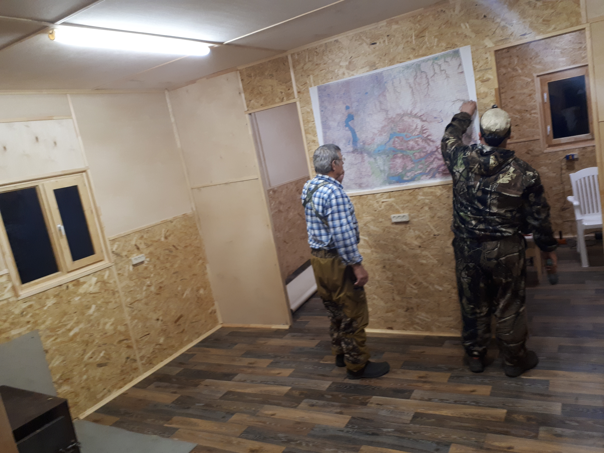
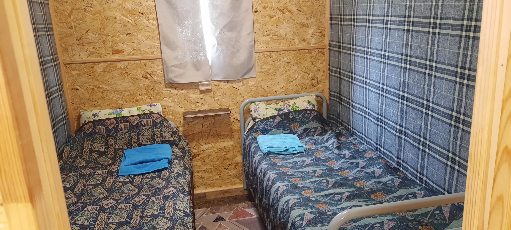

О нас
Затерянный мир на севере Центральной Сибири
Край, который не похож ни на один другой
Невероятно живописное и безлюдное место, «Затерянный мир», по словам журналистов, расположилось на севере Центральной Сибири — на плато Путорана.
База отдыха «Накомякен» — ваш проводник в край десяти тысяч кристально чистых озёр и тысячи бурных водопадов, в край загадочных рек и величественных склонов «столовых» гор. Мало кто знаком с плато Путорана, и даже бывалые путешественники, услышав рассказ о нём, недоумевают: где же находится этот чудесный мир?
Плато Путорана — одно из малоизученных и малопосещаемых мест России и мира. Побывав на базе, вы получите уникальную возможность насладиться живописной сибирской природой. Наша база поможет сделать отдых в суровом климате максимально комфортным, а программы удовлетворят самые разносторонние интересы путешественников.
База принимает группы до 10 человек. Одновременно на базе находится только одна группа, что делает ваш отдых наиболее приватным. За сезон мы принимаем всего несколько групп. Лето в Заполярье очень короткое. Не упустите свой шанс побывать на плато Путорана в этом сезоне.




